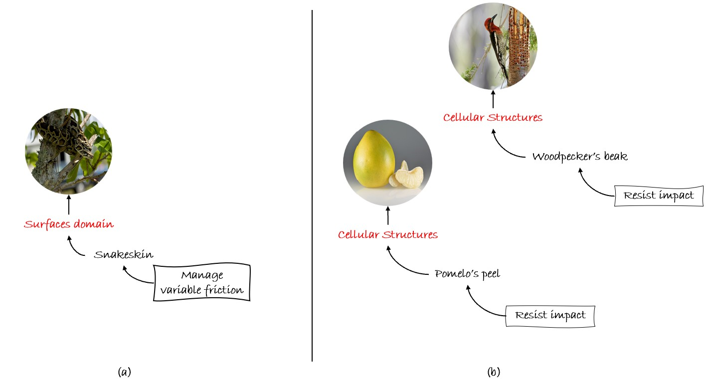
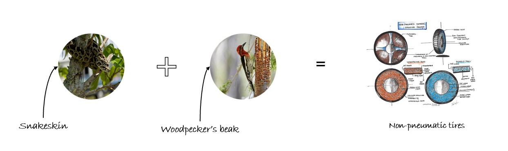

EXAMPLE WALKTHROUGH
Non-pneumatic tires: Space / Extreme-weather robots
Design a multifunctional non-pneumatic tire for space or extreme-weather robots that: "manages variable friction" and "resists impact"
Step 1: Choosing relevant Domains
The initial selection of domains for integration is driven by two key factors: the designer's specific intention for the concept and the overarching requirements of the design problem at hand.
Step 2: Explore domain dendrograms
Surfaces Domain
-
To match the function manage variable friction with a biological feature, snakeskin texture can be selected.
Its performance arises from an integrated structural design comprising triangular microstructured scales and a distinct
structural configuration that includes longitudinal pits, caudal elevation, and directional anisotropy of the microstructures


Cellular structures Domain
-
To match the function resist impact with a biological feature, the woodpecker beak can be selected.
Its performance is enabled by an integrated structure consisting of a trabecular foam core sandwiched between hard outer shells,
combined with a graded structural configuration featuring variable porosities: outer (30%), middle (65%), and inner (30%).


Step 3: Select features using meta-level design parameters
Multiple biological features may realise the same function. As shown in Figure 7, both the woodpecker beak and pomelo peel exhibit the resist impact function and fall within the cellular structures domain. To select between features sharing the same geometric domain and function, quantitative meta-level design parameters are defined and listed in Table 4. Feature selection is then guided by applying the appropriate design criteria:

- Criterion 1
- For any multifunctional application, if one of the multifunction is described as an anti-adsorption / absorption or repulsion or reduction, select the features with a lower total interaction area for combination.
- Criterion 2
- For any multifunctional application, if one of the multifunction can be described as adsorption/absorption or attraction, select the features with a higher interaction area for combination.
For cellular structures, the woodpecker beak is selected due to its high interaction area and low porosity at the contact interface.
Qualitative parameters
In addition to quantitative parameters, users may apply qualitative selection criteria such as the intended environmental context. For example, designs intended for arid regions can prioritise biological features adapted to dry environments.
| Domain | Meta-level design parameters |
|---|---|
| Surfaces | Interaction area |
| Cellular Structures | Interction area and Porosity |
| Shapes | Scale |
| Cross-sections | Scale |
Step 4: Combine
A morphology matrix is used to combine selected features. Table 5 illustrates an example morphology matrix, highlighting the range of concepts that can be generated by integrating different morphologies. Figure 8 presents a visual representation of Concept 1, which integrates snakeskin and woodpecker beak morphologies.
| Function | Surfaces | Cellular structures | Shapes | Cross-sections |
|---|---|---|---|---|
| Manage variable friction | Snakeskin | -- | Dummy organism | -- |
| Resist impact | -- | woodpecker's beak | -- | -- |
Design Concepts:
Concept 1: Snakeskin [Surfaces domain] + Woodpecker's beak [Cellular structures domain]
Concept 2: Dummy shape [Shapes domain] + Woodpecker's beak [Cellular structures domain]

Example Output: Non-pneumatic multifunctional bio-inspired tire design
Figure 9 presents a conceptual sketch of a multifunctional non-pneumatic tyre design. The design integrates snakeskin-inspired surface features for friction management with a woodpecker-beak-inspired internal structure for impact resistance. This configuration is suited for operation in high-terrain environments.

MORE MULTIFUNCTIONAL BIO-INSPIRED STRUCTURAL CONCEPTS

Figure 10 presents schematics of multifunctional bio-inspired conceptual designs developed using the MBID ideation system. (a) Painless sutures for medical applications, created by integrating porcupine quill barbs (surface features) with the rotational parabolic cross-section of a kingfisher beak. (b) Skins for marine applications, developed by combining a honeycomb cellular structure with shark skin surface features. (c) Heat-absorption structures for aerospace applications, generated through the integration of camel nostril cross-sections and micro-bumps inspired by the Namib desert beetle surface. (d) Protective helmets for sports applications, designed by integrating a penguin-inspired spindle shape, a luffa sponge cellular structure, and a corrugated conical form inspired by Balanus.